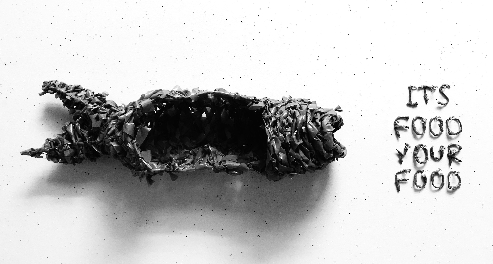
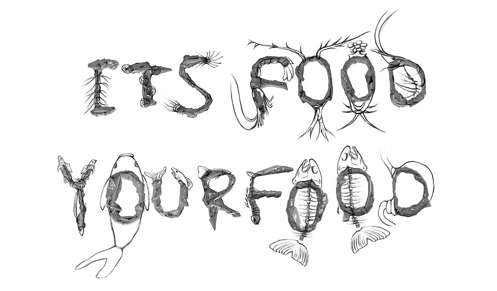
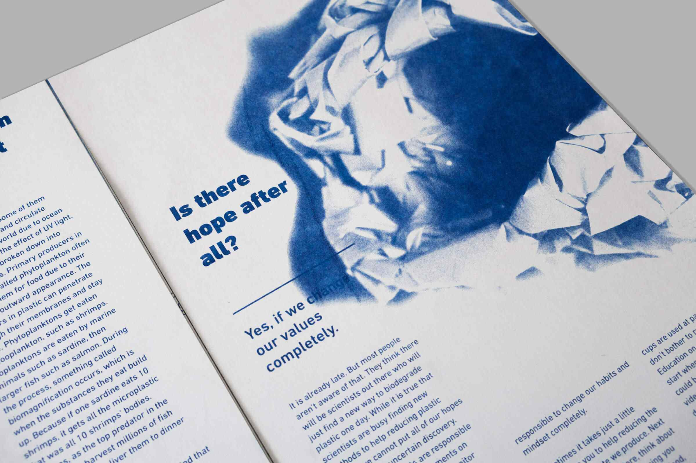

Its Food, Your Food
Graphic Design, Print Booklet
The Task
Recreate junk waste to produce a meaningful message about sustainability
The piece discusses the consequences of anthropocene waste, particularly bioaccumulation, from a pile of plastic bags I collected from my everyday life. I created a ‘fish’ sculpture from these plastic bags, photoraphed and used it as a metaphor of human’s impact on marine organisms.
Skills
Infographics
Editorial Design
Research
Photography
Background & Research
My project inspiration came from a grocery run, when I forgot to bring a reusable bag with me and had to get a new plastic bag. I got home and as I put that bag into the cabinet full of other bags, I decided to make something out of them and warn myself of the harm I'm doing to the environment.
I would like to give the reader a more comprehensive view of the bioaccumulation of plastic in the ocean. My research included 8 main categories: plastic chemical structure, history of plastic, global plastic generation and distribution, current statistics on plastic, how plastic ends up in the ocean, bioaccumulation in marine organisms, health Concerns, The United States plastic production.
Sculpture Making
Wanting to use a material that is ubiquitous and frequently used, I chose Ralph’s plastic bags as my main material. We had a full cabinet of these bags at home from the past two years of grocery shopping.
Focusing on the bioaccumulation in the ocean, I decided to make a fish sculpture. By cutting the plastic bags into long strips, I was able to weave them onto a wire structure. This weaving method creates a fishnet pattern that is mocking humans harvesting animals that eat their trash.
Drawing Over the Photograph
Wrapping plastic strips around the wire bases, I made the phrase “ITS FOOD YOUR FOOD”. Then in Photoshop, I drew different marine organisms on the top in the order of bioaccumulation stages: from small algae to shrimp, then to bigger fish like tuna, then to a human stomach.

Creating Infographics
I also created a number of infographics to support my main writing.

Other Details

Final Piece